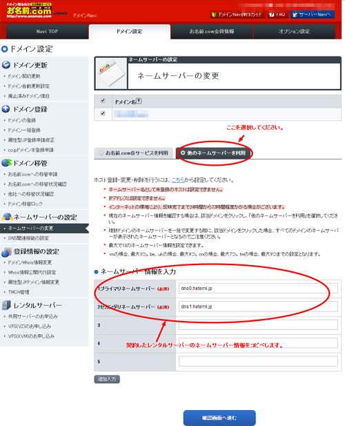
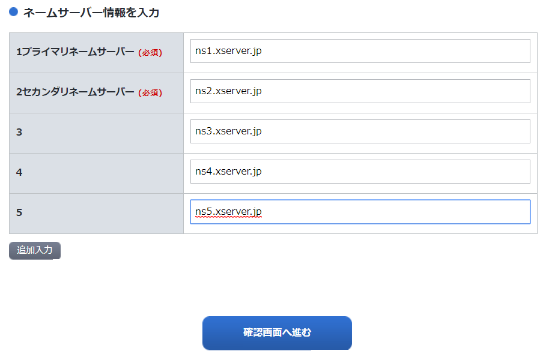
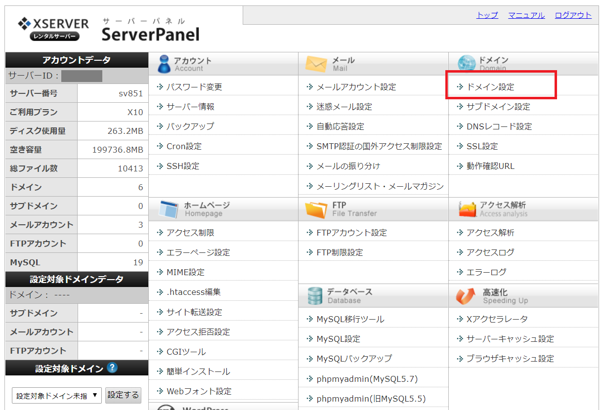
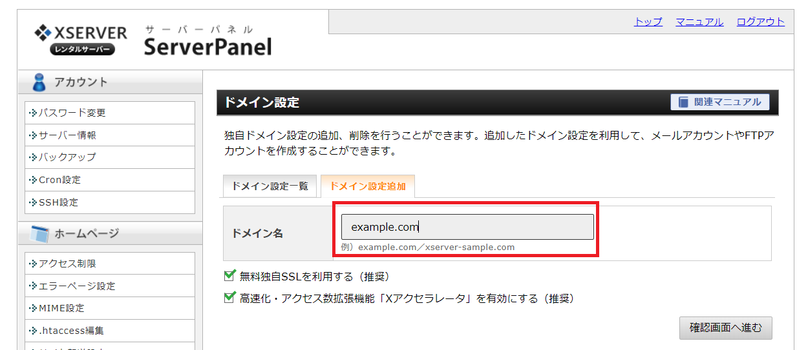

【かんたん解説】難しいネームサーバー設定をわかりやすく解説
わかると意外にかんたんなネームサーバー設定
ネームサーバー設定と聞くと、とても難しそうに思えてしまう方も多いのではないでしょうか。
私もホームページ作成をした当初はまったく意味がわかりませんでした。
しかし、ネームサーバー設定はわずか2つだけで完了します。
「借りているレンタルサーバーのサーバーIPアドレス（又はドメイン名）を調べてコピペする」
- 「ドメイン側のネームサーバー設定画面でそれを貼り付ける」
ネームサーバー設定で難しいと感じる点があるとすると「エックスサーバーで借りているけど、エックスサーバーのIPアドレスはどこで調べればいいのか」と
いう点ではないでしょうか。
自分が借りているレンタルサーバー会社のサーバーIPアドレス（ドメイン名）は、意外にパッと出てきません。
レンタルサーバー会社よって、（１）管理画面で調べられる会社（２）加入時の契約メールに記入されている会社、の2つに別れます。
このどちらかの方法で調べてもわからない時には、
マニュアルや検索エンジン経由で「エックスサーバー ネームサーバー」といったキーワードを入れて調べましょう。
当ページでは各社のIPアドレス（ネームサーバー名）を表示まとめています。
慣れるとネームサーバー設定は数分で行えます。
設定後に反映するまでの待ち時間も含めて、速ければ１時間～数時間ほどでネームサーバー設定は完了します。
では、実際に設定する方法を解説します。
準備１．ドメイン会社のネームサーバー設定画面を開く
まずは、大手ドメイン会社である「お名前.com」におけるネームサーバー設定（DNS設定）の方法を説明します。
「お名前.com」のサイトからID・パスワードを入力して管理画面にログインをします。
管理画面が出てきたら「ドメイン設定」＞「ネームサーバーの変更」をクリックしてみましょう。
次の画像の画面に切り替わりますので、「他のネームサーバーを利用」をさらに選択します。
するとネームサーバー情報（IPアドレス・アドレス名）を入れられる画面に遷移します。
まず、この画面まで行くことが準備１になります。
「お名前.com」ネームサーバー設定画面

準備２．レンタルサーバーのIPアドレス（ドメイン名）を入力する
設定画面まで辿り着いたら、「1プライマリネームサーバー」「2セカンダリネームサーバー」のところに
登録するレンタルサーバー各社のドメイン名を入力します。
レンタルサーバーのドメイン名を入力する

ここで問題になるのが「レンタルサーバーのドメイン名はどこから持ってくるのか？」という点になります。
先程、説明したように調べておくか、当ページ後半にある
各レンタルサーバーのドメイン名まとめ表から引っ張ってきましょう。
ドメイン名は各会社ごとに共通しているものなので、
このまとめ表をコピペしてもらって設定をして頂いて大丈夫だと思います。
ドメイン名は基本的に2行入力すればＯＫ
次の画像を見てもらうとわかりように、ネームサーバー情報を入力する箇所が合計で5行あります。
画像ではエックスサーバーのドメイン名を5行分入力していますが、
基本的には「プライマリ」と「セカンダリ」の2行だけ追加すれば問題ありません。
そしてドメイン名を入力して、確認画面で「設定する」などにＯＫをクリックすれば
ネームサーバー設定は完了します。
準備３．ドメイン登録も行っておく
ネームサーバーの変更は以上だけでＯＫになります。
この作業はドメイン会社の管理画面で行います。
一方で、レンタルサーバー側の管理画面でも行うことがあります。
それが「独自ドメインの登録」になります。
エックスサーバーの管理画面を例にとって説明してみたいと思います。
まず、管理画面に入ったら「ドメイン設定」を選択してください。
エックスサーバーの管理画面

「ドメイン設定」の画面に遷移したら、「ドメイン設定追加」をさらに選択します。
そこで独自ドメインを設定しましょう。
このように、独自ドメインを契約したらレンタルサーバー側で「ドメイン登録」を行わないといけません。
独自ドメインを登録する

ドメイン設定はネームサーバー設定と違い、時間がかからずすぐに反映されます。
ネームサーバー設定後の待ち時間は数時間
「ネームサーバーの設定も終わったけれども、なかなか画面が反映されない・・・」
「お名前.com」でネームサーバー設定を「ＣＰＩ」から「エックスサーバー」に切り替えたとします。
この時に設定後すぐ切り替わるかというとそうではありません。
おおくのドメイン会社では「設定の反映完了まで25時間から72時間程度かかる場合があります」と記載されています。
そのため、設定後に3日待ってしまう方も多いと思いますが、
だいたい私の経験では設定変更して1時間～3時間もたてば、ネームサーバーの反映がおわってホームページが表示されるケースがほとんどです。
どれだけ時間がかかっても、まず半日もかかりません。
半日待っても画面が表示されないようであれば、なにか設定がおかしいのか調べ直してみたほうがいいかもしれません。
設定してもホームぺージが表示されないとき
3時間たっても設定が完了しない、画面が表示されないといった場合は、
（１）DNS設定の再確認
（２）レンタルサーバー側でドメイン登録が終わっているか
（３）ワードプレス簡単インストール設定のどこか
に間違いがないかを検証しましょう。
まれに、Whois情報の設定間違いで表示が止まっていることもあります。
ドメイン会社から「Whois情報を誤表記している」とメールが来ていないかも確認しましょう。
設定が正しいか設定チェックツールで確認しよう
取得しているドメインのネームサーバーがどのレンタルサーバーに向けて設定されているのか、
チェックツールで正確に確認する方法もあります。
確認するためのサイトがこちらです。
DNS設定チェックツール
独自ドメインを入力して「検証」をクリックするだけで調べることができます。
DNS設定（各社のドメイン名まとめ）
各社の共有レンタルサーバーで用いるドメイン名をまとめています。
ドメイン名は1台ごとではなく、会社のサービスごとに付与されるものなので、
調べられないときはこちらの数値を確認してみてください。
| 会社名 |
ドメイン名
|
| エックスサーバー
| ns1.xserver.jp
ns2.xserver.jp
ns3.xserver.jp
ns4.xserver.jp
ns5.xserver.jp |
ロリポップ
| 1uns01.lolipop.jp
uns02.lolipop.jp |
| スターサーバー
| ns1.star-domain.jp
ns2.star-domain.jp
ns3.star-domain.jp |
| さくらレンタルサーバー
| ns1.dns.ne.jp
ns2.dns.ne.jp |
| ヘテムル
| dns0.heteml.jp
dns1.heteml.jp |
| iCLUSTA+
| ns.namedserver.net
ns2.namedserver.net |
| ＣＰＩ
| サポートへ確認 |
DNS設定をもっと簡単にする
同じ運営元のレンタルサーバーとドメイン会社で契約するとかんたん設定ができる。
ネームサーバー設定がどうしても苦手な方には、より簡単に設定ができる方法もあります。
それは「エックスサーバー」と「エックスドメイン」だったり、
「ロリポップ」と「ムームードメイン」というように
同じ会社が運営しているサーバーとドメイン会社をセットで契約をすると、
大抵ワンクリックでネームサーバーの設定ができます。
参照（※同じ運営元となるドメイン会社とレンタルサーバーまとめ）
この記事の著者・プロフィール
Web制作を始めて約19年になります（HTML/css、Photoshop、Webマーケティング）。2005年から当サイトの運営を開始。
これまでに300個以上のドメインを取得、10社を超えるレンタルサーバーを利用してきました。